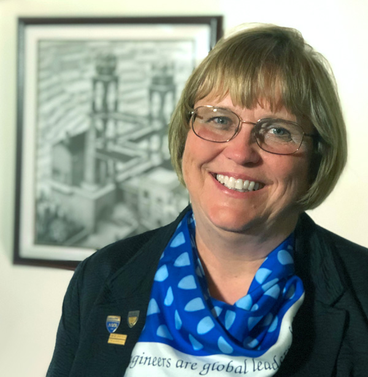
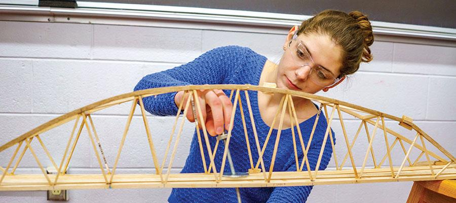

Launch Your Future as a Civil Engineer
Design the roads, bridges, and cities of tomorrow!
Pathway Snapshot
High School Courses | College Majors | Career Roles |
Algebra II, Pre-Calculus, Calculus | Civil Engineering | Civil Engineer |
Physics | Environmental Engineering | Structural Engineer |
Computer Science | Construction Engineering | Transportation Engineer |
Engineering / Robotics | Urban Planning | Water Resources Engineer |
Drafting / CAD | Architecture (related path) | Construction Manager |
Women Who Lead the Way
Dr. Maria C. Lehman
Structural Engineer · Professor · Former President, American Society of Civil Engineers (ASCE)

Photo Credit: American Society of Civil Engineers (ASCE) / Wikimedia Commons
“Engineering is about serving society—using creativity, teamwork, and technical skill to make communities safer and stronger.”
Dr. Lehman is a nationally recognized structural engineer and educator who has led major efforts in infrastructure resilience, sustainability, and disaster-resistant design. As a former ASCE president, she has championed diversity in engineering and helped shape policies that strengthen bridges, buildings, and communities across the U.S.
Day in the Life
Daily Tasks | Tools or Technologies Used |
Designing roads, bridges, or buildings | AutoCAD, Civil 3D |
Reviewing plans and safety requirements | Bluebeam, project management software |
Visiting construction sites | Drones, surveying equipment |
Collaborating with architects and city planners | BIM software |
Solving environmental or structural challenges | Data analysis tools, simulation software |
Mini-Activity: Try This!
Design a Better Bridge
- Using paper, straws, or craft sticks, design a bridge that can hold the most weight.
- Test different shapes (arches, triangles, beams) and see how engineering choices affect strength—just like real civil engineers do.
Careers & Resources
Degree Program Finder:
- Search ABET-accredited civil engineering programs
Scholarships:
- Society of Women Engineers (SWE)
- Local STEM foundations
Summer Camps & Programs:
- Engineering summer academies
- Pre-college STEM camps
Explore More:
- O*NET Civil Engineer profile
- Roadtrip Nation engineering stories
You Belong Here
If you enjoy building things, solving problems that matter, and shaping how people live and move, civil engineering could be your future. You don’t have to choose between creativity and impact—you can design solutions that make the world safer, stronger, and more sustainable.
